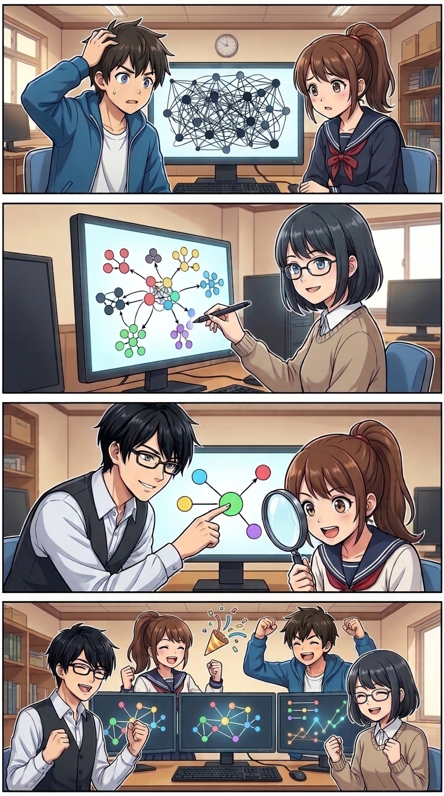
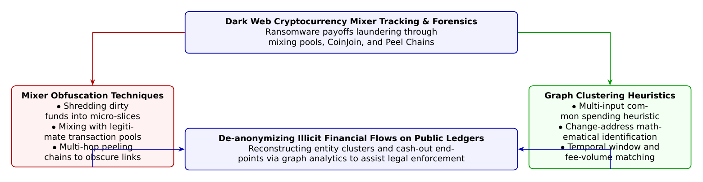

🎨 4コマ漫画挿絵（文字なし）
AI高解像度生成
▲ 【挿絵】青葉台高校 情報科学部＆帝都科学大学サイバーディフェンス・ラボでの実践シーン
💬 4コマ漫画キャラクターセリフ (Story Dialogue Script)
日・英バイリンガル (JA / EN)[蓮]「これぞダークウェブ名物の暗号資産ミキサー（タンブラー）！ 資金の足取りを濁流に紛れ込ませてロンダリングしてるんだ」
[Ren] "That's the infamous darknet cryptocurrency mixer! They dilute tainted funds into a whirlpool to launder them!"
[葵]「ブロックチェーンは誰でも閲覧できる公開台帳なのに、そんなにバラバラにされたらもう二度と追跡できないの！？」
[Aoi] "Even with a public blockchain ledger, once shredded, is it impossible to ever trace the money back!?"
[蓮]「送金の手数料パターンや時間的遅延の相関をグラフ解析すれば、ミキサーの出口アドレスを再結合できるんだね！」
[Ren] "By analyzing fee patterns and temporal latency correlations, we re-link the mixer's exit endpoints!"
[全員]「ブロックチェーンの透明性と科学の追跡眼で、悪質な資金洗浄を暴き出せ！」
[All] "With blockchain transparency and scientific forensics, we lay bare illicit money laundering!"
📖 小説本文
冬晴れの放課後、青葉台高校の情報科学部室。大型ディスプレイに映し出されていたのは、蜘蛛の巣のように無数の線で結ばれたノードの群れ――ビットコイン（Bitcoin）のブロックチェーン上で観測された、数十万件に及ぶトランザクションの有向グラフ（Directed Graph）だった。
「……うわあ、目が回りそう！」
橘葵がディスプレイを指差しながら声を上げた。画面左端にある一つのアドレス――某医療機関を襲ったランサムウェア攻撃で指定された身代金受取アドレスから、幾重にも分岐した送金矢印が、まるで煙のように霧散している。
「これ、第53話で学んだ横浜国大SPIRALの脅威インテリジェンス分析プラットフォーム（INSITE）でも追跡対象になっている暗号資産のロンダリングフローだよ」
城崎悠真がコーヒーカップを置きながら説明する。 「サイバー犯罪者は、身代金として脅し取った暗号資産をそのまま取引所で現金化しようとすると、KYC（本人確認）で即座に身元が割れてしまう。そこで彼らが頼るのが、ダークウェブ上で提供されている**『暗号資産ミキサー（Cryptocurrency Mixer / Tumbler）』**や**『コインジョイン（CoinJoin）』**という資金洗浄サービスなんだ」
神崎蓮がホワイトボードにミキサーの概念図を描いた。 「仕組みはこうです。ミキサーのプールには、世界中から集まった数千人のユーザーのビットコインが投入されます。ミキサーはそれらの資金を一度大きなプールに混ぜ合わせ、ランダムな時間差（ディレイ）と手数料を差し引いて、細切れにした別のクリーンなコインを犯罪者の指定する別のアドレスへと払い出すんです」
「泥水と真水をひとつの巨大なタンクに入れてかき混ぜてから、別の蛇口から出すようなものね！」葵が納得したように手を叩く。「それじゃあ、どのコインが誰のものだったか、完全に分からなくなっちゃうんじゃない？」
「一見すると完全な匿名化に見えます」白石結衣が眼鏡を押し上げ、静かに微笑んだ。「しかし、ビットコインのブロックチェーンは、すべての取引履歴が永久に改ざん不能な形で記録される公開台帳（Public Ledger）です。暗号資産フォレンジックとグラフアルゴリズムを駆使すれば、どんなにシャッフルされた濁流であっても、隠された相関関係を数学的に浮かび上がらせることができるのです」
---
📊 セキュリティ構造図解 (TikZ LuaLaTeX生成)
国家安全基準・工学図解
▲ 【技術構造図】IPAデジタルスキル標準・国際規格に準拠した仕組みのモデル化